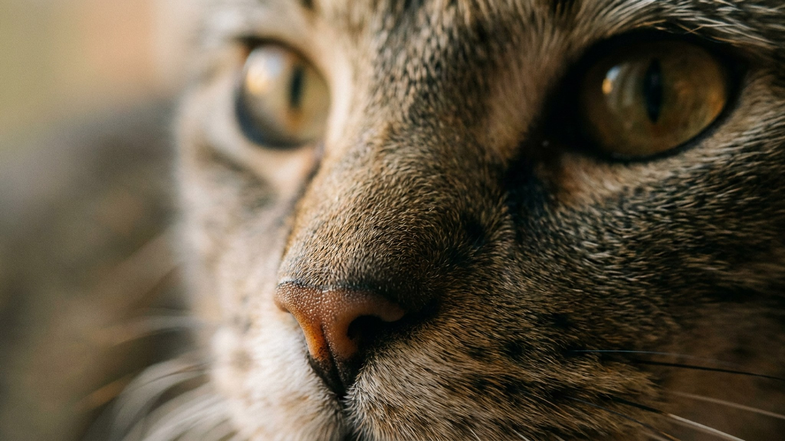

Пекинес умещается на коленях и почти не просит долгих прогулок — за это его и любят. Но у этой уютности есть цена: короткая морда и крупные, слегка выпуклые глаза делают пекинеса собакой ежедневного, а не еженедельного ухода. Пропустишь пару простых привычек — и первым отзовётся именно то, что делает породу узнаваемой: глаза и нос. Ниже — пять вещей, которые стоит встроить в распорядок, и сигналы, при которых пора к ветеринару.
🐾 Экономьте на лишних визитах к врачу
Сначала спросите AI-ветеринара в AnimaLife — часто этого достаточно, чтобы понять, нужен ли визит к врачу.
Пекинес — брахицефал: у него укороченные кости морды при обычном объёме мягких тканей. Отсюда три особенности, вокруг которых и строится уход: узкие дыхательные пути, крупные открытые глаза и глубокая складка над носом. Всё это — норма для породы, но норма, требующая внимания. Чем раньше уход входит в привычку, тем меньше поводов для тревоги потом.
Большие глаза пекинеса слабо защищены веками, поэтому легко пересыхают и собирают пыль. Базовый минимум — раз в день осматривать их при хорошем свете и промакивать уголки чистой мягкой салфеткой от внутреннего угла наружу, каждый глаз — своей.
Короткая морда означает, что пекинес хуже охлаждается через дыхание — а именно так собаки сбрасывают лишнее тепло. В жару это делает его уязвимым к перегреву сильнее, чем длинномордых собратьев.
В складке над носом скапливаются влага и частицы корма — её протирают сухой салфеткой и следят, чтобы там было сухо. Роскошная шерсть требует расчёсывания через день, иначе за ушами и на «штанах» сваливаются колтуны, под которыми преет кожа. Купание — по мере загрязнения, с обязательной тщательной просушкой складки и шерсти.
🐾 Всё о вашем питомце — в одном приложении
AI-ветеринар, дневник, напоминания о прививках и уходе. Установите AnimaLife — это бесплатно, в Telegram и MAX.
🐾 Понравился разбор?
Подпишитесь на канал — каждый день разбираем по одному тревожному симптому у кошек и собак: что в пределах нормы, а когда пора к врачу. Подпишитесь, чтобы не пропустить разбор, который может спасти здоровье вашего питомца.
Пекинес — компаньон для спокойного дома: ему не нужны марафоны, зато нужны ежедневные пять минут на глаза, складку и шерсть и разумность хозяина в жару. Он самодостаточен, с характером и достоинством, отлично живёт в квартире. Если вы готовы к этому короткому, но регулярному ритуалу ухода — получите преданного и на удивление невозмутимого друга. Плановый осмотр у ветеринара раз в год закрывает остальное.
Материал носит информационный характер и не заменяет очную консультацию ветеринара.